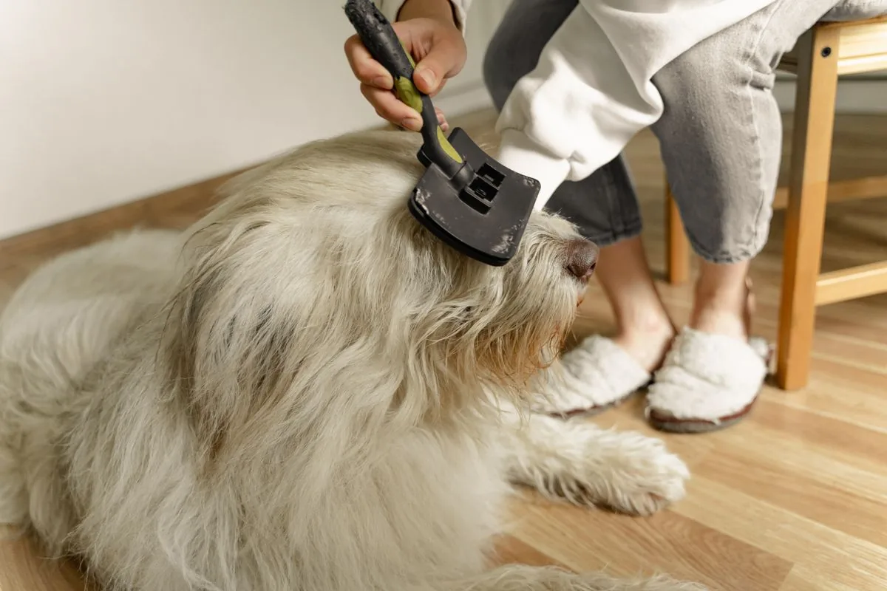

Tắm, chải lông và vệ sinh tai, móng cho chó mèo tại nhà
Tác giả: Ruler
Chải chuốt không chỉ để chó mèo đẹp hơn. Mỗi lần chải lông, bạn đang gỡ lông rụng trước khi pet nuốt vào bụng khi tự liếm, đang kiểm tra xem da có chỗ nào khác lạ không, và đang dạy pet quen với việc được chạm vào người — điều sẽ giúp ích rất nhiều ở những lần khám thú y sau này. Tắm quá nhiều cũng không tốt, tắm quá ít cũng không tốt, và cách làm cho chó và mèo lại khác nhau khá nhiều. Bài viết này giúp bạn xây một thói quen chải chuốt vừa đủ, theo từng loại lông và từng loài, với các bước làm cụ thể mà người mới nuôi có thể làm theo tại nhà.
Thông tin ở đây chỉ mang tính tham khảo chung. Nếu pet có vấn đề về da, lông rụng nhiều bất thường, tai có mùi lạ hay móng mọc quặp vào thịt, hãy liên hệ bác sĩ thú y hoặc người chăm sóc thú cưng có chuyên môn. Bài viết không chẩn đoán bệnh da hay bệnh tai, và không kê đơn thuốc hay dung dịch điều trị nào.
Nguyên tắc chung trước khi bắt đầu
Ba nguyên tắc dưới đây áp dụng cho cả chó và mèo, và được cả ASPCA lẫn American Humane nhắc tới dưới nhiều hình thức khác nhau.
Thứ nhất, bắt đầu khi pet đang thư giãn, làm từng bước ngắn, và dừng lại khi pet khó chịu. Buổi chải chuốt đầu tiên không cần hoàn hảo. Bạn chỉ cần chải được vài phút, khen ngợi, cho pet ăn một món thưởng nhỏ, rồi dừng. Lần sau pet sẽ nhớ rằng chải lông không phải chuyện đáng sợ. Nếu bạn cố làm cho xong trong một buổi dài khi pet đã sợ, lần sau pet sẽ trốn ngay khi thấy bàn chải.
Thứ hai, dùng đúng dụng cụ cho thú cưng, và dùng đúng loại dầu gội cho chó hoặc mèo. Dầu gội của người có độ pH khác với da thú cưng và có thể gây kích ứng. Bạn không cần mua nhiều loại dầu gội; chỉ cần một loại ghi rõ dành cho chó hoặc dành cho mèo, dùng theo hướng dẫn trên nhãn.
Thứ ba, không bao giờ cạo lông pet tại nhà khi chưa có hướng dẫn của bác sĩ thú y hoặc người chăm sóc có chuyên môn. ASPCA khuyên rõ là không nên cạo lông pet. Lông không chỉ để đẹp; nó còn giúp điều hòa thân nhiệt và bảo vệ da. Nếu lông đã rối thành mảng dày sát da, đừng tự cắt bằng kéo — bạn rất dễ cắt trúng da vì mảng rối nằm sát da và pet có thể cử động bất ngờ. Trong trường hợp này, hãy đưa pet tới bác sĩ thú y hoặc tiệm chăm sóc thú cưng để xử lý bằng dụng cụ phù hợp.
Chải lông theo loại lông: bảng tham khảo
Tần suất chải lông phụ thuộc chủ yếu vào độ dài và độ dày của lông, chứ không phụ thuộc vào việc pet là chó hay mèo. Bảng dưới đây tổng hợp từ hướng dẫn của ASPCA, American Humane, Trung tâm Sức khỏe Mèo Cornell (trang trực tiếp "The Special Needs of the Senior Cat") và bài tổng hợp của phòng khám thú y Ken Cohn trích lại nội dung Cornell. Tần suất trong bảng là mức tham khảo chung; bác sĩ thú y hoặc người chăm sóc thú cưng có thể tư vấn khác cho con vật cụ thể của bạn, tùy giống, tuổi và lối sống.
| Loại lông | Chó | Mèo | Ghi chú |
|---|---|---|---|
| Ngắn, mượt, ít rụng | Chải khoảng một lần mỗi tuần, bằng bàn chải cao su rồi chải lại bằng bàn chải lông cứng | Chải khoảng một lần mỗi tuần, bằng lược kim loại hoặc bàn chải lông cứng | Chải xuôi theo chiều lông mọc, nhẹ nhàng, không kéo mạnh |
| Ngắn, dày, dễ rối | Chải khoảng một lần mỗi tuần, dùng lược chải rối để gỡ lông chết rồi chải lại bằng bàn chải | Chải một đến hai lần mỗi tuần, kiểm tra kỹ vùng bụng và chân sau nơi lông dễ rối | Đừng quên chải cả đuôi |
| Dài, mềm, dễ rối | Chải hằng ngày, dùng lược chải rối gỡ từng phần rồi chải lại bằng bàn chải, chải cả lông quanh chân | Chải hằng ngày hoặc cách ngày, đặc biệt chú ý vùng bụng, nách và sau tai nơi lông dễ vón thành mảng | Nên duy trì thói quen chải hằng ngày để lông không vón thành mảng |
Với mèo lông dài, bài tổng hợp của phòng khám thú y Ken Cohn (trích nguồn Trung tâm Sức khỏe Mèo Cornell, trang "The Special Needs of the Senior Cat") nhấn mạnh chải lông hằng ngày là cách tốt nhất để gỡ lông rụng, vì mèo lông dài dễ bị rối và dễ nuốt nhiều lông khi tự liếm. Trang Cornell trực tiếp cũng khuyên chải lông hằng ngày cho mèo già, vì mèo già tự chải kém hơn và lông dễ rối thành mảng. Chải lông thường xuyên giúp giảm lượng lông mèo nuốt vào, và do đó có thể giúp giảm búi lông. Bạn không cần chải thật lâu mỗi lần; chải ngắn, đều đặn mỗi ngày sẽ hiệu quả hơn chải dài một lần mỗi tuần rồi bỏ quên cả tuần sau.
Cách chải đúng là chải từng vùng nhỏ, xuôi theo chiều lông mọc, dùng lực vừa phải. Nếu gặp một chỗ rối nhỏ, hãy giữ gốc lông bằng một tay để không kéo đau da, rồi dùng tay còn lại gỡ nhẹ bằng ngón tay trước, sau đó mới dùng lược. Nếu chỗ rối đã thành mảng cứng, đừng giật mạnh và đừng cắt bằng kéo. Hãy dừng lại, thử gỡ bằng lược chải rối, và nếu không gỡ được thì đưa pet tới bác sĩ thú y hoặc tiệm chăm sóc để xử lý.
Trong lúc chải, bạn cũng đang làm một việc quan trọng khác: kiểm tra nhanh toàn thân pet. Hãy để ý xem da có chỗ nào đỏ, có vảy, có vết loét hay rụng lông thành mảng không, có cục u hay chỗ sưng nào mới xuất hiện không, có bọ chét hay ve bám trên da không. Bạn không cần kết luận đó là bệnh gì. Bạn chỉ cần ghi chú lại vị trí và thời gian bạn thấy thay đổi, rồi hỏi bác sĩ thú y ở buổi khám tiếp theo, hoặc gọi cho phòng khám sớm hơn nếu thay đổi đó rõ rệt hoặc pet có vẻ đau hay khó chịu. Cách quan sát này được viết kỹ hơn ở dấu hiệu chó mèo khỏe mạnh và khi nào nên đưa đi bác sĩ thú y.
Tắm: chó cần tắm thường xuyên hơn mèo, nhưng cả hai đều không nên tắm quá nhiều
Tắm cho chó
ASPCA cho biết nên tắm cho chó ít nhất ba tháng một lần, nhưng một số chó cần tắm thường xuyên hơn nếu hay ra ngoài trời hoặc có vấn đề về da. American Humane cũng ghi nhận tần suất tắm cho chó phụ thuộc vào lối sống, giống và loại lông, và khuyên hỏi bác sĩ thú y về lịch tắm phù hợp cho con chó của bạn. Nói cách khác, không có một con số cố định cho mọi con chó. Chó hay đi công viên, hay lăn bùn, hay bơi sẽ cần tắm thường xuyên hơn chó chỉ ở trong nhà và đi dạo ngắn mỗi ngày.
Các bước tắm cho chó tại nhà, theo hướng dẫn chung của ASPCA và American Humane, là:
- Chải lông trước khi tắm để gỡ lông rụng và chỗ rối. Lông rối khi ướt sẽ càng chặt hơn và khó gỡ hơn.
- Chuẩn bị nước ấm vừa phải, không nóng, không lạnh. Dùng vòi sen nhẹ hoặc ca múc nước, tránh xịt mạnh vào mặt, tai và mắt.
- Dùng dầu gội dành riêng cho chó, xoa nhẹ nhàng, tránh để dầu gội vào mắt và tai. Rửa sạch hoàn toàn, vì dầu gội còn sót lại có thể gây ngứa da.
- Lau khô bằng khăn sạch, rồi để chó ở nơi ấm và khô ráo cho tới khi lông khô hẳn. Chó lông dài có thể cần sấy ở chế độ mát và giữ máy sấy cách xa, không sấy nóng sát da.
- Sau khi tắm, kiểm tra tai xem có nước đọng không, và lau nhẹ vành tai bằng khăn khô nếu cần. Không đưa vật nhọn hay tăm bông sâu vào ống tai.
Với chó có nếp gấp da ở mặt, ví dụ một số giống chó mặt ngắn, ASPCA nhắc cần lau sạch và lau khô kỹ các nếp gấp, vì bụi bẩn và ẩm ướt đọng trong nếp gấp có thể gây kích ứng da. Nếu bạn không chắc cách vệ sinh nếp gấp da cho giống chó nhà mình, hãy hỏi bác sĩ thú y ở buổi khám đầu tiên.
Tắm cho mèo
Mèo khác chó ở chỗ hầu hết mèo khỏe mạnh hiếm khi cần tắm. Mèo tự liếm lông để làm sạch, và tắm quá nhiều có thể làm khô da và mất lớp dầu tự nhiên bảo vệ lông. American Humane ghi rõ mèo thường không cần tắm, trừ khi có bọ chét hoặc có vấn đề sức khỏe cần tắm theo chỉ định của bác sĩ thú y. Bài tổng hợp của phòng khám thú y Ken Cohn (trích nguồn Cornell) cũng ghi nhận hầu hết mèo hiếm khi cần tắm, và chải lông hằng ngày vẫn là việc quan trọng hơn tắm.
Bạn nên tắm cho mèo khi lông bị bẩn rõ rệt, bị dính chất bẩn hay chất có thể gây hại khi mèo liếm phải, hoặc khi mèo già hay béo phì và không còn tự làm sạch được những vùng khó với tới. Trong những trường hợp này, các bước chuẩn bị cũng giống như tắm cho chó, nhưng cần nhẹ nhàng và nhanh gọn hơn, vì hầu hết mèo không thích nước và dễ hoảng sợ.
- Cắt móng trước khi tắm để giảm nguy cơ bị cào khi mèo hoảng sợ.
- Chải lông trước khi tắm để gỡ lông rụng và chỗ rối.
- Chỉ dùng vài cm nước ấm trong chậu hoặc bồn, không đổ nước đầy bồn. Dùng dầu gội dành riêng cho mèo, không dùng dầu gội của chó hay của người cho mèo.
- Tránh để nước và dầu gội vào mắt, tai và mũi. Lau khô ngay sau khi tắm và giữ mèo ở nơi ấm cho tới khi lông khô.
- Nếu mèo dính phải chất có thể gây độc — ví dụ hóa chất, dầu máy hay thuốc trừ sâu — đừng tự tắm qua loa rồi chờ xem. Hãy liên hệ bác sĩ thú y ngay, vì chất dính trên lông sẽ bị mèo liếm vào bụng khi tự làm sạch. Cách xử lý khi pet ăn phải chất độc được viết ở thức ăn của người gây độc cho chó mèo.
Cắt móng: chỉ cắt phần đầu móng, đừng cắt vào phần hồng
Móng quá dài có thể làm pet đi lại khó khăn, móng quặp có thể gây đau và làm tổn thương bàn chân. ASPCA cho biết móng của chó nên được cắt khi móng vừa chạm đất lúc chó đi lại, và móng của mèo nên được cắt mỗi 10 ngày đến 2 tuần một lần. American Humane cũng ghi nhận chó và mèo đều cần cắt móng thường xuyên, và móng dài có thể gây đau và cản trở việc đi lại.
Bên trong mỗi móng có một phần sống gọi là tủy móng, chứa mạch máu và dây thần kinh. Cắt vào phần này sẽ gây đau và chảy máu. Ở móng sáng màu, bạn có thể thấy phần hồng bên trong; ở móng tối màu, bạn không thấy được, nên chỉ cắt từng lát mỏng một và dừng lại ngay khi thấy phần đầu móng có dấu hiệu khác lạ. Cách an toàn nhất cho người mới nuôi là:
- Dùng kềm cắt móng dành riêng cho thú cưng, đúng cỡ cho chó hoặc mèo.
- Làm quen dần: vài ngày đầu chỉ chạm vào bàn chân và từng ngón chân, khen ngợi và cho thưởng, chưa cắt. Khi pet đã quen, hãy cắt một hoặc hai móng trong một buổi, rồi dừng.
- Chỉ cắt phần đầu móng, trước điểm móng bắt đầu cong xuống. Đừng quên móng đeo ở phía trong chân.
- Chuẩn bị sẵn bột cầm máu cho thú cưng trong tầm tay. Nếu bạn lỡ cắt vào tủy móng, hãy bình tĩnh, rắc bột cầm máu lên đầu móng và giữ nhẹ cho tới khi máu ngừng chảy, rồi liên hệ bác sĩ thú y nếu máu không ngừng.
- Nếu pet giãy giụa mạnh, cắn hay tỏ ra rất sợ, hãy dừng lại và đưa pet tới bác sĩ thú y hoặc tiệm chăm sóc để cắt móng. American Humane khuyên rõ: chó mèo hay cắn khi cắt móng nên được đưa tới người chăm sóc có chuyên môn để tránh làm bị thương cả pet và người.
Với mèo già, móng có thể dày và dài hơn vì mèo ít cào mài móng hơn khi già. Bạn nên kiểm tra móng mèo già thường xuyên hơn, và nhờ bác sĩ thú y kiểm tra móng ở mỗi lần khám định kỳ.
Vệ sinh tai: chỉ làm khi cần, và làm nhẹ nhàng
Tai khỏe mạnh thường sạch, khô và không có mùi lạ. Bạn không cần vệ sinh tai hằng ngày. Chỉ vệ sinh tai khi bạn thấy tai có ráy bẩn rõ rệt, hoặc khi bác sĩ thú y dặn vệ sinh tai vì lý do cụ thể.
Cách vệ sinh tai tại nhà theo hướng dẫn chung là lau nhẹ vành tai và phần tai ngoài mà bạn nhìn thấy được bằng khăn mềm hoặc miếng bông ẩm, không đưa tăm bông hay vật nhọn sâu vào ống tai. Không đổ dung dịch vệ sinh tai vào tai khi chưa có hướng dẫn của bác sĩ thú y, vì dung dịch không phù hợp có thể gây kích ứng.
Những dấu hiệu nên lưu ý và hỏi bác sĩ thú y là tai có mùi lạ, pet lắc đầu hay gãi tai nhiều, tai đỏ hay sưng, có dịch chảy ra từ tai, hoặc pet kêu đau khi bạn chạm vào tai. Bài viết không kết luận những dấu hiệu này là bệnh gì; bạn chỉ cần ghi chú lại và liên hệ bác sĩ thú y để được khám trực tiếp. Cách quyết định khi nào nên gọi bác sĩ thú y được viết kỹ hơn ở dấu hiệu chó mèo khỏe mạnh và khi nào nên đưa đi bác sĩ thú y.
Lịch chải chuốt hằng tuần mà người mới nuôi có thể bắt đầu ngay
Bạn không cần làm mọi việc mỗi ngày. Bảng dưới đây là lịch gợi ý, dựa trên tần suất mà ASPCA, American Humane và Trung tâm Sức khỏe Mèo Cornell (trang trực tiếp "The Special Needs of the Senior Cat") đã nêu. Bạn có thể điều chỉnh theo loại lông và lối sống của pet nhà mình, và hỏi bác sĩ thú y nếu không chắc.
| Việc | Chó lông ngắn | Chó lông dài | Mèo lông ngắn | Mèo lông dài |
|---|---|---|---|---|
| Chải lông | Khoảng 1 lần mỗi tuần | Hằng ngày | Khoảng 1 lần mỗi tuần | Hằng ngày hoặc cách ngày |
| Tắm | Ít nhất 3 tháng một lần, hoặc khi bẩn rõ rệt | Ít nhất 3 tháng một lần, hoặc khi bẩn rõ rệt | Hiếm khi cần tắm, chỉ khi bẩn hay theo chỉ định của bác sĩ thú y | Hiếm khi cần tắm, chỉ khi bẩn hay theo chỉ định của bác sĩ thú y |
| Kiểm tra móng | Kiểm tra mỗi tuần, cắt khi móng vừa chạm đất lúc đi lại | Kiểm tra mỗi tuần, cắt khi móng vừa chạm đất lúc đi lại | Kiểm tra mỗi tuần, cắt khoảng 10 ngày đến 2 tuần một lần | Kiểm tra mỗi tuần, cắt khoảng 10 ngày đến 2 tuần một lần |
| Kiểm tra tai | Nhìn nhanh mỗi tuần khi chải lông | Nhìn nhanh mỗi tuần khi chải lông | Nhìn nhanh mỗi tuần khi chải lông | Nhìn nhanh mỗi tuần khi chải lông |
Hãy chọn một buổi cố định trong tuần, ví dụ tối thứ bảy, để làm buổi chải chuốt chính. Buổi này chỉ cần 10 đến 15 phút: chải lông, kiểm tra móng, nhìn nhanh tai, lau nhẹ vành tai nếu cần. Làm đều đặn mỗi tuần sẽ giúp bạn sớm nhận ra thay đổi trên cơ thể pet, và giúp pet quen với việc được chạm vào người.
Kết luận
Chải chuốt tại nhà không cần cầu kỳ, nhưng cần đều đặn và đúng cách. Chải lông theo loại lông — lông ngắn khoảng một lần mỗi tuần, lông dài hằng ngày — tắm cho chó ít nhất ba tháng một lần hoặc khi bẩn rõ rệt, tắm cho mèo chỉ khi thật sự cần, cắt móng chỉ ở phần đầu móng và chuẩn bị sẵn bột cầm máu, vệ sinh tai nhẹ nhàng và chỉ khi cần. Nếu pet sợ, giãy giụa hay cắn khi chải chuốt, hãy dừng lại và nhờ bác sĩ thú y hoặc người chăm sóc có chuyên môn giúp đỡ. Làm được như vậy, bạn không chỉ giúp pet sạch sẽ hơn mà còn có cơ hội quan sát sức khỏe của pet mỗi tuần.

Nguồn tham khảo
- ASPCA, "At-Home Pet Grooming: Top Tips and Recommendations" — hướng dẫn chải lông theo loại lông, tắm cho chó ít nhất ba tháng một lần, cắt móng cho mèo mỗi 10 ngày đến 2 tuần một lần, không cạo lông pet : https://www.aspca.org/news/home-pet-grooming-top-tips-and-recommendations
- American Humane, "Grooming Your Pet" — hướng dẫn chải lông, tắm và cắt móng cho chó và mèo, tần suất tắm tùy lối sống và loại lông, mèo thường không cần tắm trừ khi có bọ chét hay vấn đề sức khỏe : https://www.americanhumane.org/public-education/grooming-your-pet/
- NYC Animal Care Centers, "Feline Grooming Tips" — hướng dẫn chải lông, tắm và vệ sinh cho mèo, mèo lông ngắn chải khoảng một lần mỗi tuần, mèo lông dài chải thường xuyên hơn, tắm cho mèo thường không cần thiết : https://www.nycacc.org/wp-content/uploads/2023/10/Feline-Grooming-Tips.pdf
- Cornell Feline Health Center, "The Special Needs of the Senior Cat" (trang trực tiếp, cập nhật 12/2016) — chải lông hằng ngày cho mèo già, kiểm tra móng hằng tuần, kiểm tra sức khỏe nhanh trong lúc chải lông : https://www.vet.cornell.edu/departments-centers-and-institutes/cornell-feline-health-center/health-information/feline-health-topics/special-needs-senior-cat
- Ken Cohn DVM, "Medical Benefits of Regular Home Grooming for Cats" — bài tổng hợp của phòng khám thú y, trích nguồn Cornell Feline Health Center; chải lông hằng ngày đặc biệt quan trọng với mèo lông dài, mèo hiếm khi cần tắm, kiểm tra móng trong buổi chải hằng tuần : https://www.kencohndvm.com/articles/418485-medical-benefits-of-regular-home-grooming-for-cats